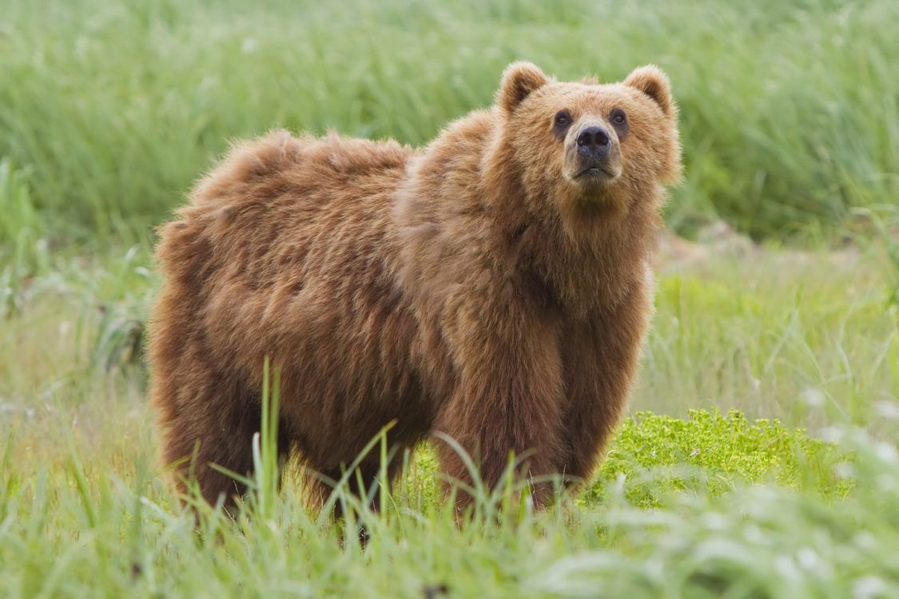
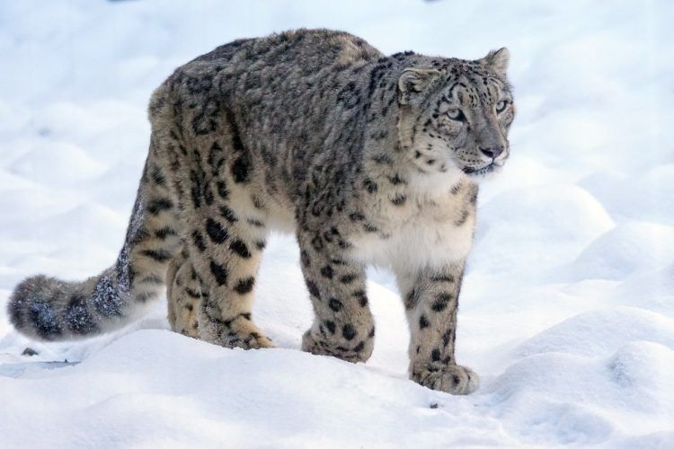
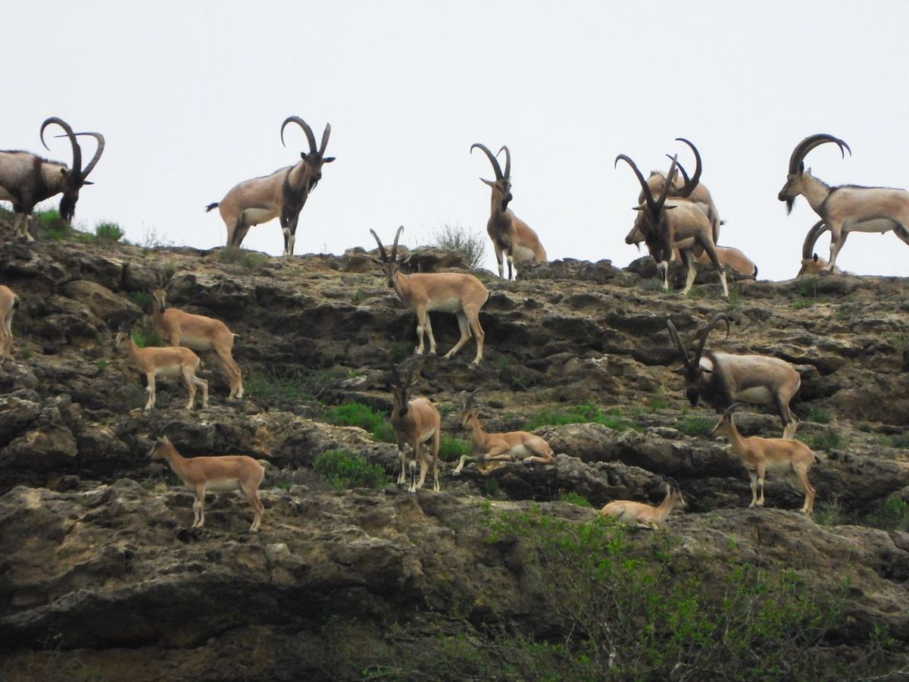
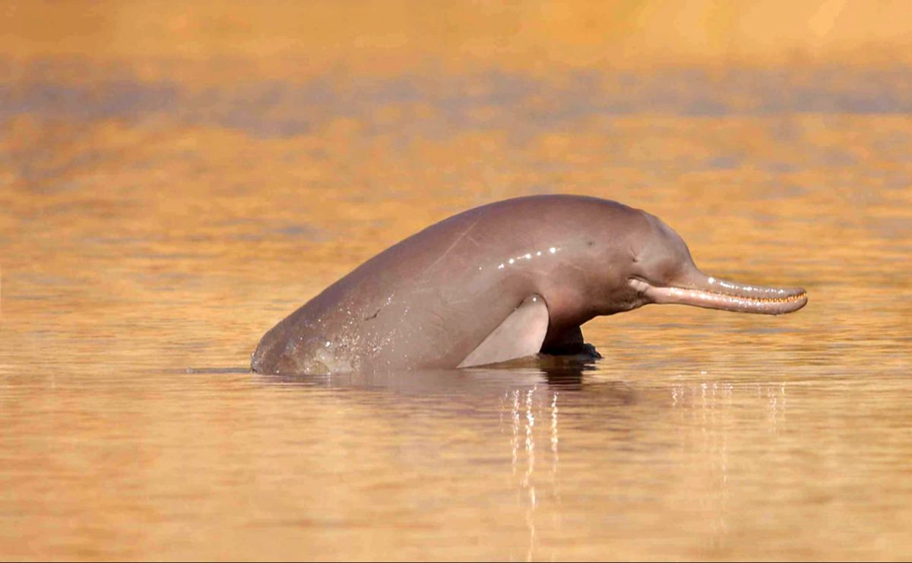

Explore Pakistan’s Incredible Wildlife
Some of the most famous animals found in Pakistan include the rare snow leopard, which lives in the northern mountains, and the Markhor, the national animal of Pakistan known for its spiral horns. Other animals include the Himalayan brown bear, Sindh ibex, and Indus river dolphin, a unique freshwater dolphin that lives in the Indus River.

Himalayan brown bear is a rare subspecies of the brown bear found in the high mountain regions of Himalayas, especially in Pakistan, India, and Nepal.

The Snow Leopard is a rare and beautiful big cat that lives in the high mountains of Central and South Asia, including Pakistan, India, Nepal, and China. It is well adapted to the cold and rocky environment of the Himalayas.

Sindh ibex is a wild mountain goat found mainly in the rocky hills and deserts of Sindh, especially in Kirthar National Park. It is a subspecies of the Siberian ibex and is known for its large curved horns and strong climbing ability.

The Indus River dolphin is a rare freshwater dolphin found in the Indus River in Pakistan. It is one of the few dolphin species in the world that lives only in rivers instead of oceans.